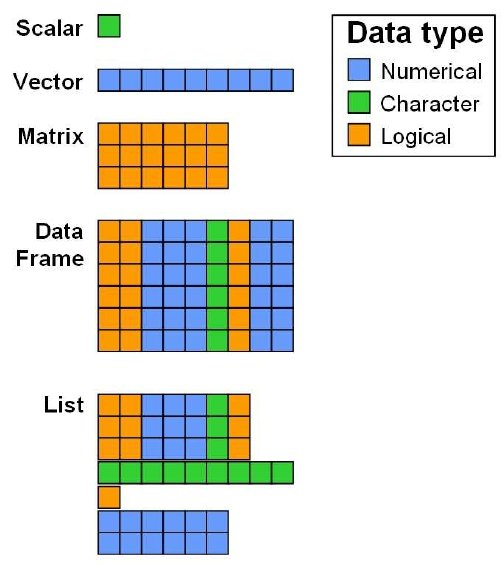

27 Data structures in R
When working with large datasets in R, choosing the right data structure is crucial for both speed and memory usage. Two data structures that are often more efficient than data frames are matrices and lists. In this tutorial, we'll explore when and why matrices and lists are more efficient than data frames and provide practical examples to illustrate these concepts.
27.0.1 Data Structures in R: An Overview
Data Frames: The most commonly used data structure in R, designed to store data tables. They can hold different data types (numeric, character, factor, etc.) in different columns.
Matrices: A matrix is a 2-dimensional array that can only store data of a single type (usually numeric). All elements must be of the same type.
Lists: A list is a flexible data structure that can store elements of different types (including numbers, strings, vectors, and even other lists).

27.0.2 When Are Matrices More Efficient Than Data Frames?
Matrices are more efficient than data frames when:
Data Types Are Homogeneous: All elements are of the same type (e.g., all numeric or all characters).
Memory Usage: Matrices are stored in contiguous blocks of memory, making them faster to access and modify.
Computational Operations: Many mathematical operations (like matrix multiplication, inversion, etc.) are optimized for matrices.
Example: Using a Matrix Instead of a Data Frame
# Create a data frame with 1 million rows and 2 columns
df <- data.frame(col1 = rnorm(1e6), col2 = rnorm(1e6))
# Create a matrix with the same data
matrix_data <- matrix(c(rnorm(1e6), rnorm(1e6)), ncol = 2)
# Measure time to compute column means
microbenchmark(colMeans(df),
colMeans(matrix_data))Unit: milliseconds
expr min lq mean median uq max neval
colMeans(df) 6.35513 6.436710 11.240835 8.793935 14.6055 24.42429 100
colMeans(matrix_data) 3.42694 3.898585 3.895036 3.947000 3.9610 4.00420 10027.0.3 When Are Lists More Efficient Than Data Frames?
Lists are more efficient than data frames when:
Data Types Are Heterogeneous: The elements are of different types or sizes.
Flexible Data Storage: Lists allow you to store different types of data without the constraints of column structure.
Example: Using a List for Heterogeneous Data
# Create a data frame with mixed types
df_mixed <- data.frame(col1 = 1:1000, col2 = rep(letters, length.out = 1000))
# Create a list with the same data
list_mixed <- list(col1 = 1:1000, col2 = rep(letters, length.out = 1000))
# Access elements
microbenchmark(df_mixed$col1, # Slower access
list_mixed[[1]]) # Faster accessUnit: nanoseconds
expr min lq mean median uq max neval
df_mixed$col1 510 530 684.1 540 595 9280 100
list_mixed[[1]] 100 110 203.2 130 140 4900 100
In R, the difference in speed between using [[ ]] (double square brackets) and [ ] (single square brackets) comes down to how they work and what they return:
[[]] (Double Square Brackets): Used for extracting a single element from a list or a data frame. It returns the element itself, not as a list or data frame but as its raw type (like a vector, number, or character string).
[] (Single Square Brackets): Used for subsetting a list, vector, or data frame. It always returns an object of the same type as the original (i.e., if you subset a list, it will return a list, even if you only select one element).
Why [[ ]] is Faster than [ ]? Direct Access vs. Subsetting:
[[ ]] provides direct access to a single element. This means that when you use [[ ]], R goes straight to the memory location of the desired element and retrieves it directly. [ ] is used for subsetting and retains the original type of the object (like a list or data frame). It returns a subset of the list or data frame, so it has to create a new object of the same type and copy the contents into it. This involves more overhead. Simplifying vs. Preserving Structure:
[[ ]] simplifies the output to the raw type, meaning no additional structures or attributes are retained. [ ] preserves the structure of the object, and maintaining these additional data structures and attributes (like row names or class) takes extra time and memory.